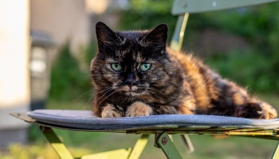

Interesting facts about cats
- A cat has the ability to both calm your nervous system and provide an immediate outlet for fun and play. Although cats are independent animals who like to scavenge and explore on their own terms, they are also very affectionate with their owners and people they trust.
- Maine Coons are one of the biggest domestic cats in our living world.
- Cats have been with us ever since humans ruled the world.They have been great for hunting mice and other pests.
- As kittens they have 26 deciduous, or “baby”, teeth. As adult cats they have 30 permanent teeth. Don’t forget to take care of those pearly whites with regular dental cleanings.
- Cats are nearsighted, but their peripheral vision and night vision are far superior compared to humans.
- Although a group of kittens are more commonly called a litter, they can also be known as a “kindle” of kittens.
Top favourite breeds
- Ragdoll
- British Short Hairs
- Sphynx cat
- Devon Rex
- Exotic Shorthair
- Bengal Cat